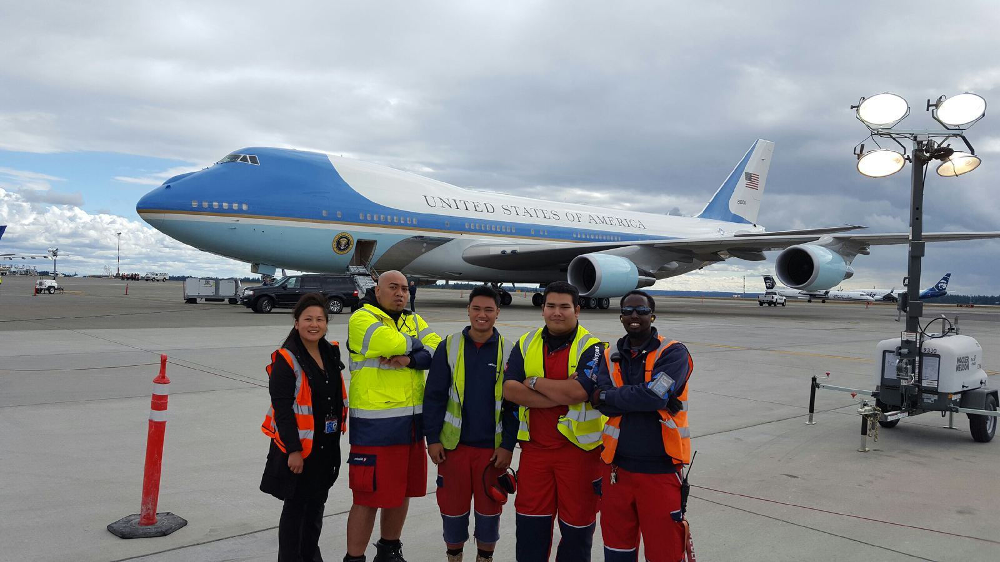

About me: The John Ramirez Story.

My Top 10 Movies:
- 1. Down Periscope
- 2. The World is Not Enough
- 3. Austin Powers: Goldmember
- 4. Enemy at the Gates
- 5. U571
- 6. Space Battleship Yamato
- 7. Atlantis the Lost Empire
- 8. Princess Mononoke
- 9. The Specialist
- 10. Rush
Fun Facts About Me!
- -I am originally from a small town called Perris in Southern California.
- -My Favorite videogame as a kid is Sonic adventure, I've played it on every platfrom it's on!
- -At age 5 I earned my family's heirloom, a 200 year old machete that I still have to this day!
- -My Favorite kind of music is mainly instrumentals, symphony, and orchestra but i do listen to many forms of music...except rap.
- -my introduction to Monty Python and British Humor was through yelling at John Cleese for trespassing into a Non-Civilian area at work.
- -I enjoy playing Dungeons and Dragons and I am learning skills my characters have to better understand them.
- -I got my first kiss from a Parrot by accident.
- -I led and supervised the arrival for Air Force One back in 2016.
- -I've been run over by my own ATV 3 times in the same day.
- -I was stranded on a boat with no food or water for two days before being rescued.
Moving to Washington:
- Originally from Southern California, I didn't enjoy the constant heat that Palm Desert provided. After graduating from High School I originally intended to enlist in the US Navy. However my mother was around for Vietnam and did not want me anywhere near the horrors she saw. Thus, I moved up north here to Seattle to begin a new life away from SoCal.
Work history:
- My work life is mainly centered at Seatac Airport, I originally worked in the customs area, working my way to the position of Operations Agent for a company called Swissport where I supervised and coordinated many air operations for the company. I was considered such a valuable asset that when the company came out with a proprietary new system, i was tasked as head administrator and trainer for my branch. Management and coworker alike, I trained them and authorized them on this system. After some personal life events I found myself experimenting with various fields of work to find a job I felt satisfied at. I began to see that I wanted more out of life and that I needed a job that challenged me to be better and sharper.
Goals:
- One day, I will graduate as an official Software Developer. Instead of spending all the new money I will make, I wanna save up to buy a some land and build my dream home. Afterwords I plan to invest in Real Estate, Stocks, and businesses while working my way up in the ranks of the Tech Industry. I plan to go as far as my ambition will take me and beyond. So one day I can live the life I earned, get married, and be the best man I can be for myself. and my loved ones.